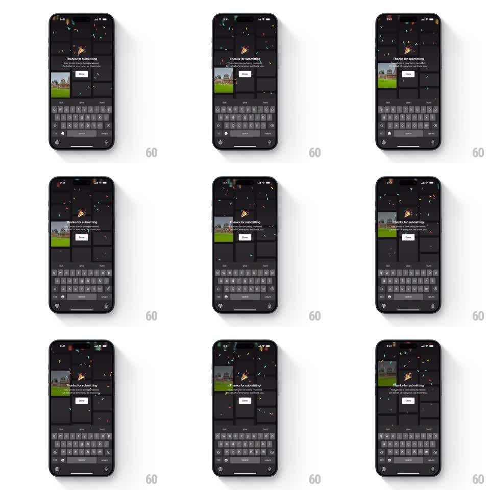

Media
Frame-by-frame

Rebuild this animation 1:1: Unsplash's submission success celebration - a "Thanks for submitting" modal appears over the dark upload form while colorful confetti rains down across the whole screen.

Rebuild this animation 1:1: Unsplash's submission success celebration - a "Thanks for submitting" modal appears over the dark upload form while colorful confetti rains down across the whole screen. ## Integration Integration: stack-agnostic spec - springs given as stiffness/damping, timed motions as duration + curve; map every value to your framework and animation library of choice. ## Scene Unsplash's dark upload flow: dimmed photo thumbnails and an open keyboard below. Centered above everything, a success modal: "Thanks for submitting" with a short review note and a white "Done" button. From the top edge, confetti - small rectangles and curls in pink, teal, yellow, blue - bursts and drifts down over the modal and the dimmed UI. ## Motion spec Pattern: success modal with confetti rain, ~4s total. - The modal scales in (0.9 to 1, spring stiffness 320 damping 22) as the backdrop dims further (250ms). - Confetti bursts from two points at the top corners (initial outward velocity, ~80 pieces over the first 700ms), each piece tumbling (rotation 2 to 3 revolutions per second) and fluttering down with sideways sway (plus/minus 25px sine, random phase). - Pieces fall at varied rates (2 to 3.5s to cross), passing in front of the modal, and exit at the bottom edge. - A light second wave (~30 pieces) keeps the celebration going another second; then emission stops and the last pieces fall out. ## Calibration - The confetti is festive but sparse enough that the modal text stays readable at all times. - The keyboard and form behind remain frozen - only modal and confetti move. ## Reduced motion Modal fades in; a single gentle confetti puff fades out. ## Don't miss - Confetti renders above the modal, not behind it. - Pieces are flat paper shapes that foreshorten as they tumble, not dots.